Nubira-Lacetti | ||||||||
| ||||||||
| . | Definición |
| 1.6 DOHC | |
| Tipo de aceite de la caja de cambios | TOTAL FLUID III G ó ESSO JWS 3309 |
| Capacidad de líquido de la caja de cambios | 5,77 ± 0,2 L (6,1 ± 0,2 qt) |
| Piñón | Relación |
| 1.6 DOHC | |
| Primera | 2.875 |
| Segunda | 1.568 |
| Tercera | 1.000 |
| Cuarta | 0.697 |
| Marcha atrás | 2.300 |
| Transmisión intermedia | 1.020 |
| Diferencial | 3.750 |
| . | Capacidad |
| 1.6 DOHC | |
| Aceite de la caja de cambios (llenado en seco) | 5,77 ± 0,2 L (6,1 ± 0,2 qt) |
| Aceite de la caja de cambios (vaciado y rellenado) | 2,1 L (2,2 qt) |
| Aplicación | Ralentí | Inmovilización |
| En gama "D" | 3,9-4,2 kg/cm² (55-60 lbs/pulg2) | 11,3-12,5 kg/cm² (161-178 lbs/pulg2) |
| En gama "R" | 6,0-6,9 kg/cm² (85-98 lbs/pulg2) | 16,2-18,6 kg/cm² (230-265 lbs/pulg2) |
| Aplicación | N•m | Lb-pie | Lb-pulg. |
| Tapón de drenaje | 17 | 13 | - |
| Tuerca de ajuste del cable de mando | 8 | - | 71 |
| Tornillos de fijación del conjunto de la palanca de mando del cambio de marchas | 8 | - | 71 |
| Tuerca del eje de la palanca de la válvula manual | 12 | - | 106 |
| Tornillos del interruptor del alcance de la transmisión (TR) | 5.4 | - | 48 |
| Tornillo de retención del sensor de velocidad de entrada | 5.4 | - | 48 |
| Tornillo de retención del sensor de velocidad de salida | 7.4 | - | 65 |
| Tornillos de retención del TCM | 5 | - | 44 |
| Tuerca racor del tubo de entrada del refrigerador de aceite | 35 | 26 | - |
| Tornillo del tubo de entrada del refrigerador de aceite | 9 | - | 80 |
| Tornillo de unión del tubo de entrada | 35 | 26 | - |
| Tuerca racor del tubo de salida trasero del refrigerador de aceite | 35 | 26 | - |
| Tornillo del clip del tubo de salida trasero del refrigerador de aceite | 9 | - | 80 |
| Tornillo de la conexión del tubo de salida delantero | 35 | 26 | - |
| Tornillos inferiores de fijación de la caja de cambios al motor (a) | 73 | 54 | - |
| Tornillos inferiores de fijación de la caja de cambios al motor (b) | 31 | 23 | - |
| Tornillos inferiores de fijación de la caja de cambios al motor (c) | 21 | 15 | - |
| Tornillos superiores de fijación de la caja de cambios al motor | 73 | 54 | - |
| Tornillos del soporte de fijación superior de la caja de cambios | 60 | 44 | - |
| Tornillos del soporte de fijación trasero | 60 | 44 | - |
| Tornillo y tuerca de conexión del bloque amortiguador | 80 | 59 | - |
| Tornillos del convertidor de par | 45 | 43 | - |
| Tapones roscado | 7.4 | - | 65 |
| Tornillo de la abrazadera de la caja de cambios | 5.4 | - | 48 |
| Tornillos de la placa de bloqueo del depósito del aceite | 5.4 | - | 48 |
| Tornillo de la placa de la carcasa de la caja de cambios | 9.8 | - | 87 |
| Tornillos del alojamiento de la caja de cambios | 29 | 22 | - |
| Tornillo del muelle de retención manual | 9.8 | - | 87 |
| Tornillos del soporte del trinquete de bloqueo de estacionamiento | 7.4 | - | 65 |
| Tuerca de corona de planetario (estándar) | 9.8 | - | 87 |
| Tuerca de corona de planetario (máximo) | 29 | 22 | - |
| Tornillos de la tapa trasera de la caja de cambios | 25 | 18 | - |
| Tornillos de la bomba de aceite | 25 | 18 | - |
| Tornillos de la caja de válvulas | 11 | - | 97 |
| Tornillos de la malla filtrante del aceite | 9.8 | - | 87 |
| Tornillos del cárter del aceite | 7 | - | 62 |
| Conexiones | 25 | 18 | - |
| Tornillos del eje del estátor | 25 | 18 | - |
| Tornillos de la válvula de solenoide de cambio | 11 | - | 97 |
| Tornillo de la carcasa del diferencial a la corona del diferencial | 102 | 75 | - |
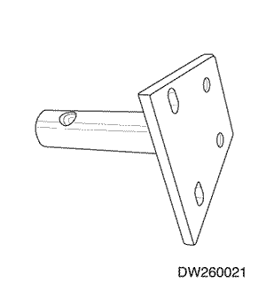  | DW260-021-02 Fijación de servicio de la caja de cambios automática |
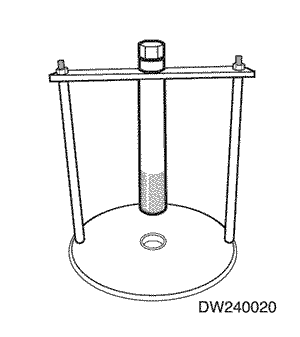  | DW240-020 Compresor de muelles del freno/embrague |
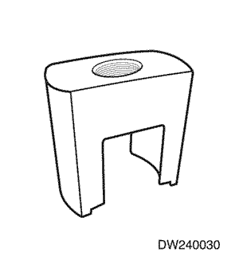  | DW240-030 Adaptador del embrague de avance |
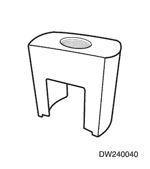  | DW240-040 Adaptador del embrague de directa |
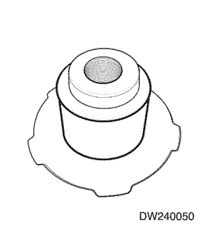  | DW240-050 Adaptador del freno de sobremarcha |
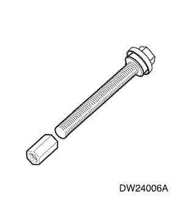  | DW240-060-01 Tornillo/tuerca del compresor de muelles de freno |
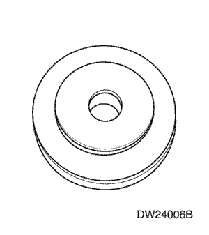  | DW240-060-02 Plato del compresor de muelles del freno |
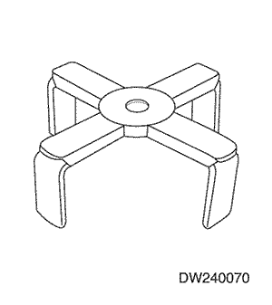  | DW240-070 Adaptador del freno de 1ª/marcha atrás |
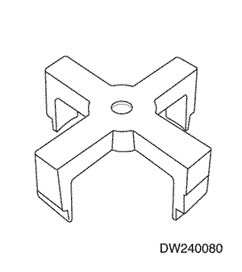  | DW240-080 Adaptador del freno de 2ª |
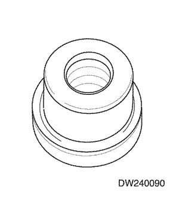  | DW240-090 Extractor de la corona planetaria |
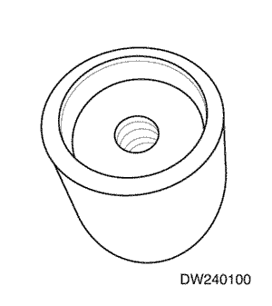  | DW240-100 Adaptador de instalación del contraengranaje conductor |
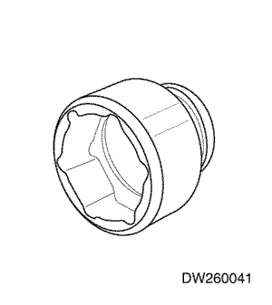  | DW260-041 Llave de instalación/desmontaje de la tuerca de la corona planetaria (52 mm) |
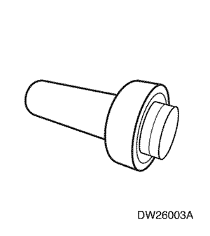  | DW260-031-01 Instalador del retén de aceite de la carcasa de la caja de cambios |
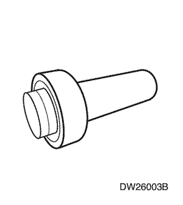  | DW260-031-02 Instalador del retén de aceite de la carcasa de la caja de cambios |
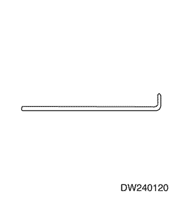  | DW240-120 Terminal de medida |
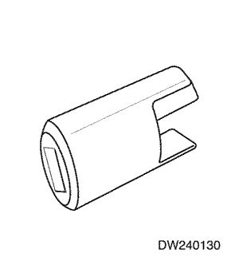  | DW240-130 Adaptador de precarga del diferencial |
 | DW260-013 Fijación del soporte de la caja de cambios |
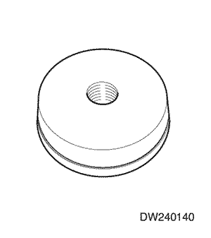  | DW240-140 Adaptador de la pista exterior del cojinete lateral del alojamiento de la caja de cambios |
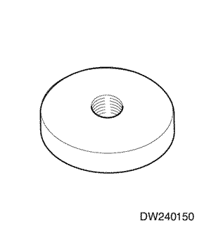  | DW240-150 Adaptador de la pista exterior del cojinete lateral de la carcasa de la caja de cambios |
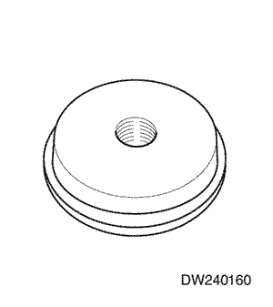  | DW240-160 Adaptador de pista exterior de cojinete de rodillos cónicos de la carcasa de la caja de cambios |
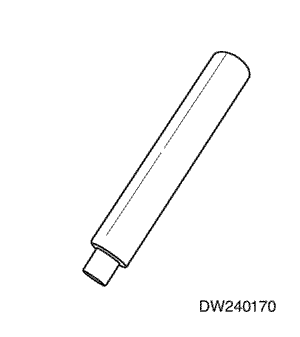  | DW240-170 Mango del adaptador |


| © Copyright Chevrolet Europe. Reservados todos los derechos |